import matplotlib.pyplot as plt
import numpy as np日常工作中经常要用到 matplotlib 来绘图，每次绘图碰到一些细节问题都得谷歌，下次遇到继续谷歌 :) 不知道你是否跟我一样。一方面是自己太懒了，没总结；另一方面，是 matplotlib 实现同一个目标的方式太多了。
比如设置图片标题，可以使用 plt.title()，也可以使用 ax.set_title()。出现这种情况的原因是 matplotlib 提供了两套接口来实现相同的功能：一套是类 MATLAB 工作风格的接口（方便 MATLAB 党丝滑迁移过来），一套是面向对象风格的接口（面向程序员）。这就造成了很多 matplotlib 初学者两种风格代码混用的情况，比如我 :)
这篇文章的主要内容如下：
- 介绍 matplotlib 绘图的基本原理和标准步骤
- 对 MATLAB 风格与面向对象风格做一个比较
- 绘图细节与如何画出精美的图
- 总结数据分析中常用图表的绘图模板代码
matplotlib 是如何绘图的？
matplotlib 内部封装了三层 API：
FigureCanvas：绘图区域；Renderer：可以理解为画笔，控制绘图行为；Artist：如何使用Renderer绘图。
FigureCanvas 和 Renderer 解决与计算机底层的交互问题，Artist 控制点、线、文字、图片等图像要素在绘图区域上展现的细节问题。因此，我们要画出心仪的图像，只需要用好 Artist 对象就可以了 —— 做一个优秀的艺术家！
Artist 对象有两种类型：
- 基础对象（primitives）：包括点、线、文字、图片等等我们希望呈现的要素；
- 容器对象（containers）：包括画布、坐标轴、坐标系。
不难理解，容器对象是用来放置基础对象的。我们在数学作图的时候，也是先画一个框，再画一个坐标系，坐标轴标好刻度，再作图。与之类似，使用 matplotlib 绘图的标准步骤是：
- 创建一个
figure实例； - 使用
figure实例创建一个或多个Axes或者Subplot实例; - 使用
Axes实例方法创建 primitives。
下面我们就按照这个逻辑来作图。首先我们使用 plt.figure 创建 figure 实例，然后使用 figure.add_axes() 方法创建坐标系，最后使用 plot 方法在坐标系上画图。
NOTE:
figure.add_axes()允许我们在画布任意位置创建坐标系，传入rect=[left, bottom, width, height]参数控制坐标系在画布中位置的百分比。
left, bottom, width, height = 0.1, 0.1, 0.8, 0.8 # Quantities are in fractions of figure width and height.
rect = left, bottom, width, height # the dimension of `Axes` object
fig = plt.figure(figsize=(16, 8), dpi=100) # create a `figure` object, `figsize` sets the dimension, `dpi` sets pixel units.
ax = fig.add_axes(rect)
ax.plot([1, 2, 3, 4]) # plot y using x as index array 0..N-1
plt.show()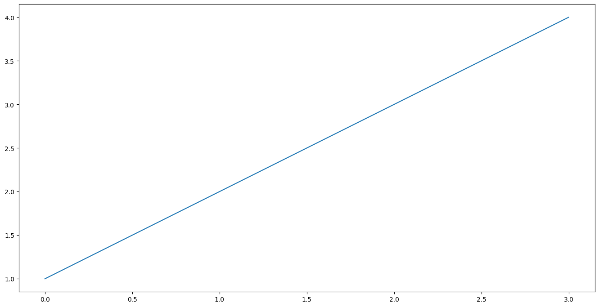
除了添加坐标系，我们还可以使用 figure.add_subplot 方法直接添加子图。子图是 Axes 的一个子类，我们可以把子图看作画布矩阵中的一个元素，每个元素有自己的坐标系，我们可以在上面画图。比如，在下面的代码中，我们创建两个子图。
fig = plt.figure(figsize=(16, 8), dpi=100)
ax1 = fig.add_subplot(2, 1, 1) # 2 rows, 1 column, the first subplot
ax2 = fig.add_subplot(2, 1, 2) # 2 rows, 1 column, the second subplot
print('fig.axes: ', fig.axes)
print('ax1.figure:' , ax1.figure)
print('ax2.figure: ', ax2.figure)
print('ax1.xaxis: ', ax1.xaxis)
print('ax2.xaxis: ', ax2.xaxis)
print('ax1.yaxis: ', ax1.yaxis)
print('ax2.yaxis: ', ax2.yaxis)fig.axes: [<Axes: >, <Axes: >]
ax1.figure: Figure(1600x800)
ax2.figure: Figure(1600x800)
ax1.xaxis: XAxis(200.0,424.0)
ax2.xaxis: XAxis(200.0,87.99999999999999)
ax1.yaxis: YAxis(200.0,424.0)
ax2.yaxis: YAxis(200.0,87.99999999999999)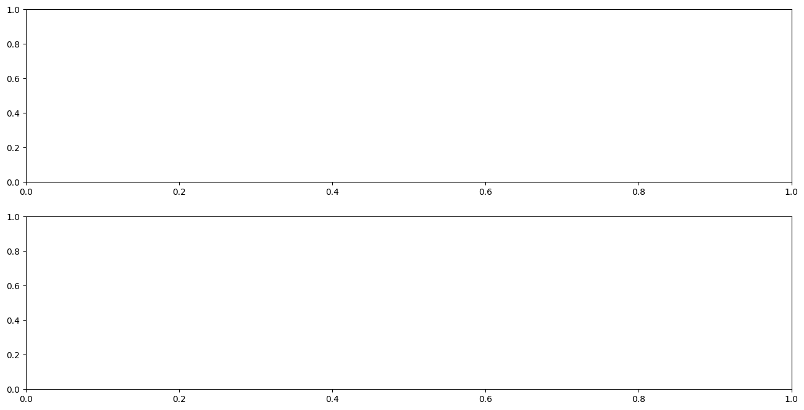
以上输出可以发现，figure 对象包含两个坐标系；ax1 和 ax2 所处的 figure 是一样的；ax1 和 ax2 的坐标轴不一样。
除了先生成图，再添加坐标系，我们也可以使用 plt.subplots() 方法同时生成图和坐标系。比如，下面我们同时生成横向的两个子图，并让它们共享 Y 轴。
# create some toy data
x = [1, 2, 3, 4]
y1 = [1, 2, 3, 4]
y2 = [2, 5, 9, 14]
fig, (ax1, ax2) = plt.subplots(1, 2, sharey=True, figsize=(16, 8), dpi=100)
ax1.plot(x, y1)
ax2.plot(x, y2)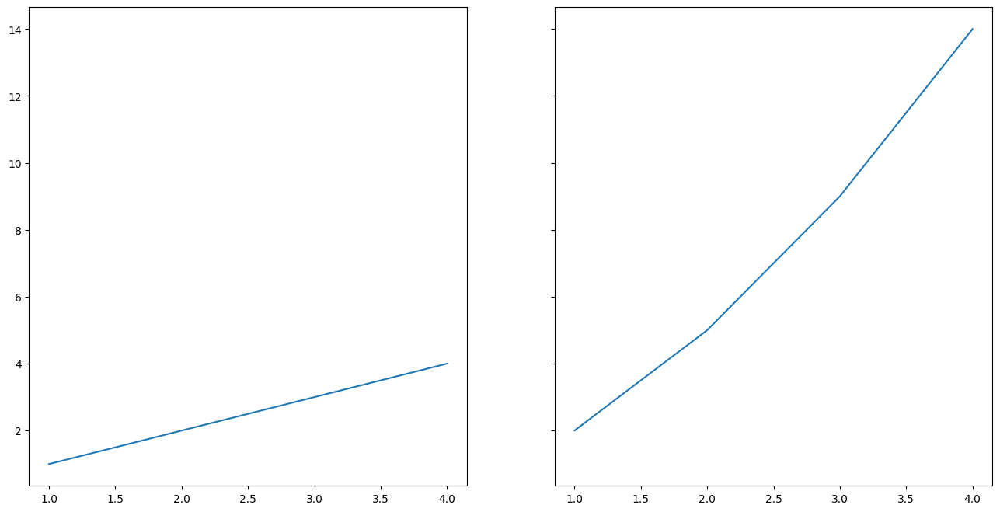
OO-style vs Pyplot-style
在上面的代码中，我们使用了面向对象的风格来使用 matplotlib，即首先显示地创建了图和坐标系实例，再调用它们的方法实现绘图。除此之外，matplotlib 还提供了另一套模仿 MATLAB 的接口，即 Pyplot-style interface。比如下面的代码：
plt.figure(figsize=(16, 8), dpi=100)
plt.plot([1, 2, 3, 4])
plt.title('Pyplot-style')
plt.show()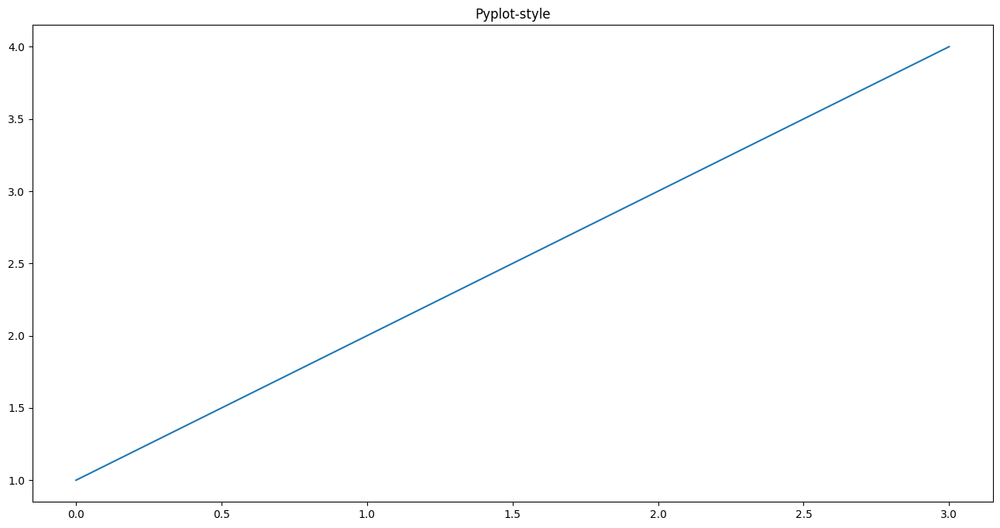
Pyplot-style 接口是基于状态的接口（state-based interface）。我的理解是每调用一次 pyplot 中的命令就会改变一下当前的状态（也就是图像），并将改变之后的状态保存下来，plt.show() 展示最终的状态。而 OO-style 是每次新建一个对象，调用该对象的方法从而在画布上创建新的内容。
两者相比，Pyplot-style 接口简洁，方便我们快速的生成各类图像，但是功能不够强大。OO-style 是官方文档推荐我们使用的方式，功能更加强大，我们可以更自由的控制画布中的元素，从而实现图形的定制。因此，在接下来的内容里，我们都使用 OO-style 的方式来绘图。
画一张精美的图
要画一张精美的图，就需要对 Artist 对象进行定制。首先附上官方文档里的这张图。

我们可以对各种 Aritst 类型对象进行定制，包括：
- 画布
- 坐标系
- 坐标轴
- 点、线
- 文字
- 图例
- annotation
坐标轴
matplotlib 的 Axes 是绘图的入口。一旦在图上放置了一个 Axes，就可以使用许多方法向Axes 添加数据。一个 Axes 通常具有一对 Axis Artists，它们定义了数据坐标系，并包括添加注释（如 x 轴和 y 轴标签、标题和图例）的方法。
fig, ax = plt.subplots(figsize=(16, 8), layout='constrained')
np.random.seed(19680801)
t = np.arange(200)
x = np.cumsum(np.random.randn(200))
y = np.cumsum(np.random.randn(200))
linesx = ax.plot(t, x, label='Random walk x')
linesy = ax.plot(t, y, label='Random walk y')
# 设置 x 轴标签
ax.set_xlabel('Time [s]')
# 设置 y 轴标签
ax.set_ylabel('Distance [km]')
# 设置标题
ax.set_title('Random walk example')
ax.legend()
plt.show()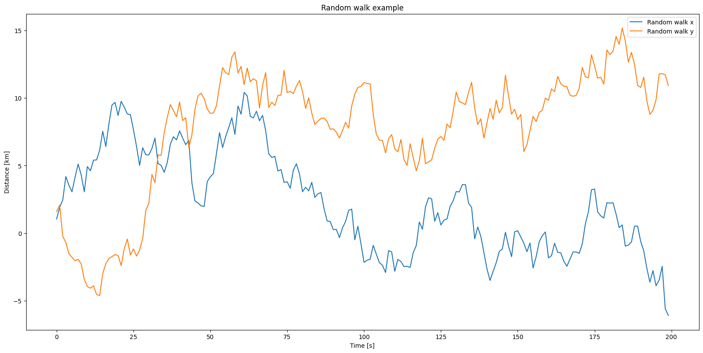
也可以使用 set_xlim 和 set_ylim 方法设置坐标轴的范围，可以使用 set_xscale 和 set_yscale 设置坐标轴的比例尺度。
fig, ax = plt.subplots(figsize=(16, 8), layout='constrained')
np.random.seed(19680801)
t = np.arange(200)
x = 2**np.cumsum(np.random.randn(200))
linesx = ax.plot(t, x)
ax.set_yscale('log')
ax.set_xlim([20, 180])
plt.show()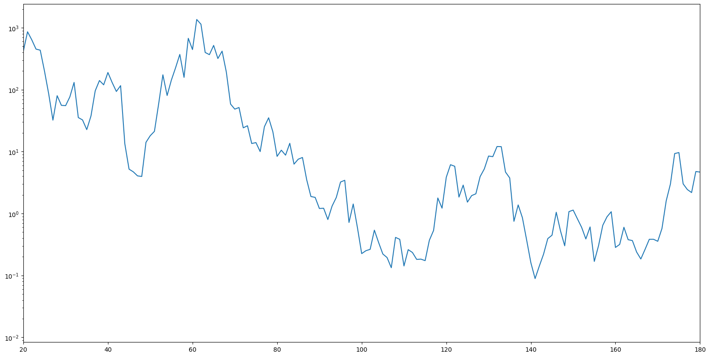
Axes 类还提供了处理坐标轴刻度及其标签的辅助方法。其中最直接的是 set_xticks 和 set_yticks，它们可以手动设置刻度的位置，以及可选地设置它们的标签。可以使用minorticks_on 或 minorticks_off 来切换次要刻度。
fig, ax = plt.subplots(figsize=(16,8), layout='constrained')
xx = np.arange(0, 2*np.pi, 0.01)
ax.plot(xx, np.sin(xx))
ax2 = ax.twinx()
# 设置刻度和标签
ax2.set_yticks([0., .5*np.pi, np.pi, 1.5*np.pi, 2*np.pi],
labels=["$0$", r"$\frac{1}{2}\pi$",
r"$\pi$", r"$\frac{3}{2}\pi$", r"$2\pi$"])
# 开启次要刻度
plt.minorticks_on()
plt.show()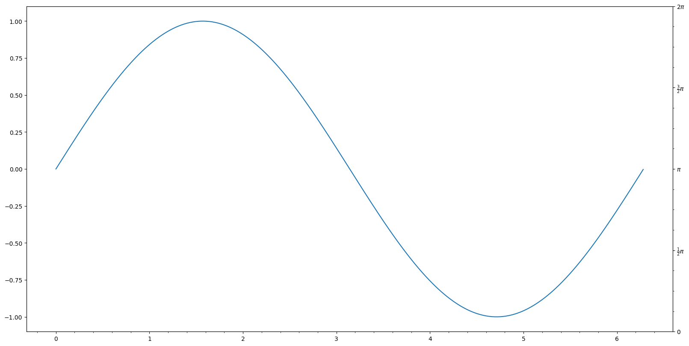
也可以使用 tick_params 调整 Axes 刻度和刻度标签：
fig, ax = plt.subplots(figsize=(16, 8))
ax.plot(np.arange(10))
ax.tick_params(top=True, labeltop=True, color='red', axis='x',
labelcolor='green')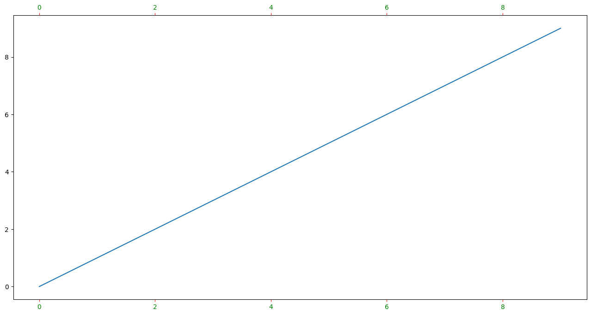
线
matplotlib 中的线是一个 line2D 对象，它有很多属性，我们可以通过对属性进行修改实现对线的美化和定制。这里，列出一些比较常用的属性：
color或者c：线的颜色；alpha：透明度；linewidth：线的宽度；linestyle或者ls；-或者solid：实线；--或者dashed：短划线；-.或者dashdot：点划线；:或者dotted：点虚线；
marker或则m：.：点o：圆圈^：上三角形+：加号x：Xs：正方形*：五角星
下面，我们在代码中来看一下各种属性的使用：
# create some toy data
data1, data2, data3, data4 = np.random.randn(4, 100)
fig, ax = plt.subplots(figsize=(16,8), dpi=100)
ax.plot(np.cumsum(data1), color='black', linewidth='3', linestyle='-', marker='o', alpha=0.5)
ax.plot(np.cumsum(data2), color='red', linestyle='--', marker='^')
ax.plot(np.cumsum(data3), color='green', linestyle='-.', marker='+')
ax.plot(np.cumsum(data4), color='orange', linestyle=':', marker='x')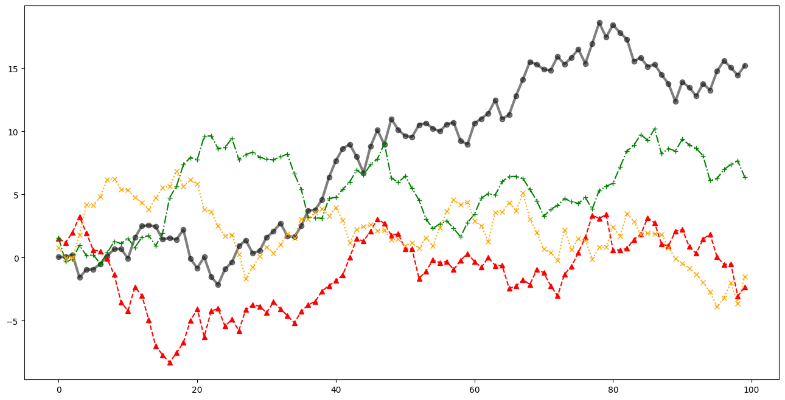
我们也可以使用对应的方法来设置或者修改属性值。ax.plot() 方法返回一个 line2D 对象列表，我们可以在对应的 line2D 对象上调用方法。比如，我们可以使用 set_linestyle() 方法修改 linestyle 属性，可以使用 set_marker() 方法修改 marker 属性。
fig, ax = plt.subplots(figsize=(16, 8), dpi=100)
l, = ax.plot(np.cumsum(data1))
l.set_linestyle('--')
l.set_marker('x')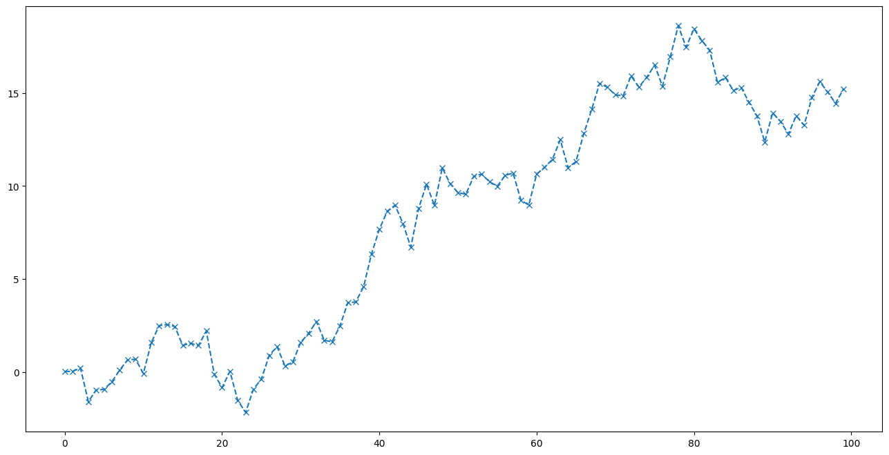
data1, data2, data3, data4 = np.random.randn(4, 100)fig, ax = plt.subplots(figsize=(16, 8))
x = np.arange(len(data1))
ax.plot(x, np.cumsum(data1), color='blue', linewidth=3, linestyle='--')
l= ax.plot(x, np.cumsum(data2), color='orange', linewidth=2, linestyle=':')
# l.set_linestyle(':')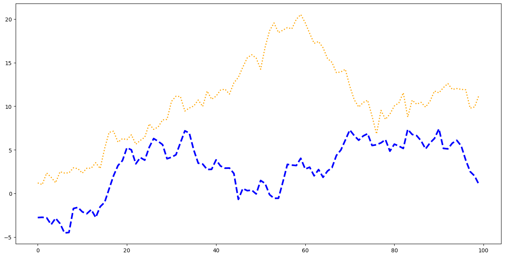
文字
matplotlib 中的文字是一个 matplotlib.text.Text 对象，利用相关的属性我们可以控制文字显示的样式，包括文字位置、显示的字体、字体大小、颜色等等。
alpha：透明度fontfamily：FONTNAME, ‘serif’, ‘sans-serif’, ‘cursive’, ‘fantasy’, ‘monospace’fontsize：float or ‘xx-small’, ‘x-small’, ‘small’, ‘medium’, ‘large’, ‘x-large’, ‘xx-large’fontweight：a numeric value in range 0-1000, ‘ultralight’, ‘light’, ‘normal’, ‘regular’, ‘book’, ‘medium’, ‘roman’, ‘semibold’, ‘demibold’, ‘demi’, ‘bold’, ‘heavy’, ‘extra bold’, ‘black’fontstyle：‘normal’, ‘italic’, ‘oblique’
这里放上官方文档的例子：
fig = plt.figure(figsize=(16,8))
ax = fig.add_subplot()
fig.subplots_adjust(top=0.85)
# Set titles for the figure and the subplot respectively
fig.suptitle('bold figure suptitle', fontsize=14, fontweight='bold')
ax.set_title('axes title')
ax.set_xlabel('xlabel')
ax.set_ylabel('ylabel')
# Set both x- and y-axis limits to [0, 10] instead of default [0, 1]
ax.axis([0, 10, 0, 10])
ax.text(3, 8, 'boxed italics text in data coords', style='italic',
bbox={'facecolor': 'red', 'alpha': 0.5, 'pad': 10})
ax.text(2, 6, r'an equation: $E=mc^2$', fontsize=15)
ax.text(3, 2, 'Unicode: Institut für Festkörperphysik')
ax.text(0.95, 0.01, 'colored text in axes coords',
verticalalignment='bottom', horizontalalignment='right',
transform=ax.transAxes,
color='green', fontsize=15)
ax.plot([2], [1], 'o')
ax.annotate('annotate', xy=(2, 1), xytext=(3, 4),
arrowprops=dict(facecolor='black', shrink=0.05))
plt.show()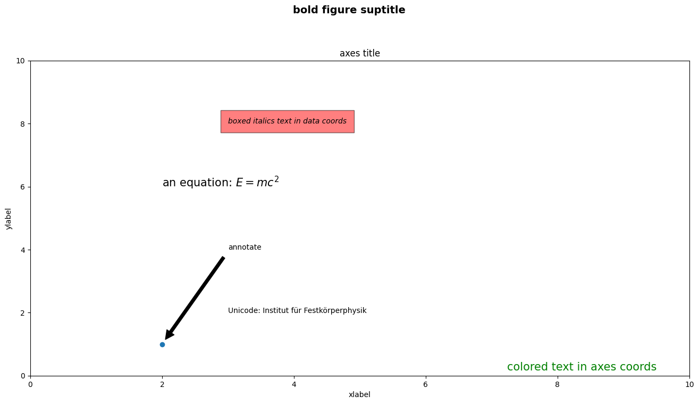
图例
data1, data2, data3, data4 = np.random.randn(4, 100)
fig, ax = plt.subplots(figsize=(16,8), dpi=100)
ax.plot(np.cumsum(data1), color='black', linewidth='3', linestyle='-', marker='o', label='data1')
ax.plot(np.cumsum(data2), color='red', linestyle='--', marker='^', label='data2')
ax.plot(np.cumsum(data3), color='green', linestyle='-.', marker='+', label='data3')
ax.plot(np.cumsum(data4), color='orange', linestyle=':', marker='x', label='data4')
ax.legend(loc='best', frameon=False)
plt.show()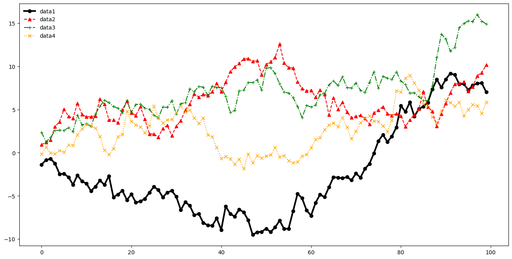
Spines
data1, data2, data3, data4 = np.random.randn(4, 100)
fig, ax = plt.subplots(figsize=(16,8), dpi=100)
ax.plot(np.cumsum(data1), color='black', linewidth='3', linestyle='-', marker='o', label='data1')
ax.plot(np.cumsum(data2), color='red', linestyle='--', marker='^', label='data2')
ax.plot(np.cumsum(data3), color='green', linestyle='-.', marker='+', label='data3')
ax.plot(np.cumsum(data4), color='orange', linestyle=':', marker='x', label='data4')
ax.legend(loc='best', frameon=False)
# Remove the plot frame lines. They are unnecessary chartjunk.
ax.spines["top"].set_visible(False)
ax.spines["right"].set_visible(False)
plt.show()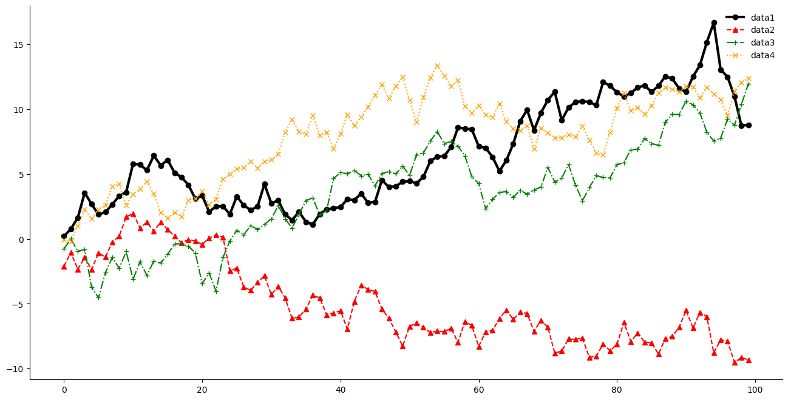
References
- https://matplotlib.org/matplotblog/posts/pyplot-vs-object-oriented-interface/
- https://stackoverflow.com/questions/52816131/matplotlib-pyplot-documentation-says-it-is-state-based-interface-to-matplotlib
- https://matplotlib.org/stable/tutorials/introductory/usage.html#styling-artists